260717两长上市后对中国半导体影响几何
长鑫存储作为"A股巨无霸"8月上市，将如何重估整个中国半导体板块？ 本期系统梳理 AI 硬件投资框架（算力×存力×运力×电力）、存储从周期品向成长股的逻辑切换、 长鑫/长存的盈利与市值想象空间，以及设备材料的高确定性机会，并解释本轮暴涨暴跌的本质。
课程目录
一、AI 硬件投资清单：算力×存力×运力×电力
研究员把整个 AI 时代上游硬件概括为四条主线——算力、存力、运力、电力（电力更偏电芯环节），并把国产 AI 产业链分为三个层次：
- 第一阶段（芯片自主可控）：AI 算力（GPU/ASIC，华为、寒武纪、海光三分天下，沐曦、摩尔线程群起）、AI 存力（国产模组方兴未艾，存储持续扩产跻身全球前列）、AI 运力（Scale-up 交换芯片成为数据中心主力需求）、AI 电力（供电架构升级催生功率模块新机遇）。
- 第二阶段（制造底座自主可控）：晶圆厂（先进代工是 AI 算力扩张的"物理底座"）、封测（CoWoS/CoWoS-L 等先进封装持续升级）。
- 第三阶段（底层硬科技自主可控）：刻蚀、薄膜沉积、CMP 等设备，以及配套的材料、EDA、IP。

景气度验证：高盛 6 月供需热力图显示，半导体元器件、设备等多数环节仍处"极紧"状态，紧张延续到 2027。DRAM ASP（含结构）2026 年同比 +250–300%、2027 年再 +10–20%；NAND +200–250%/+10–20%；ABF 载板 +30–35%/+45–50%；CCL 覆铜板 +35–40%/+45–50%；PCB +20–25%/+25–30%；前道设备、光模块、InP 衬底等均处极紧区间。
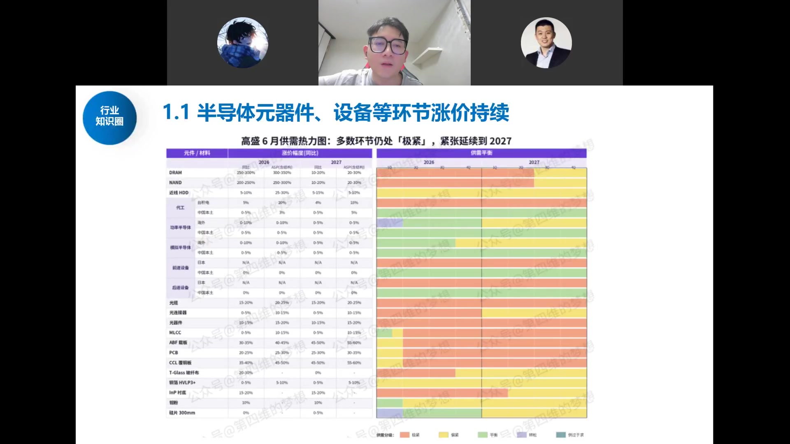
四大主线的量化对比：算力（NV A100 1252 TOPS → B200 18000 TOPS，10 倍）、存力（HBM2 307GB/s → HBM3E 1200GB/s，4 倍；HDD 80–200MB/s → SSD 500–2000MB/s）、运力（Nvlink 3.0×12 600GB/s → Nvlink 5.0×18 1800GB/s；PCIe 5.0×16 128GB/s → 7.0×16 512GB/s）。基座是半导体上游：逻辑芯片 5nm→3nm→2nm、FET→FinFET→GAAFET、传统封装→先进封装、3D NAND 200→300→400 层、DRAM 1a→1b→1c 及 6F2→4F2→3D DRAM。
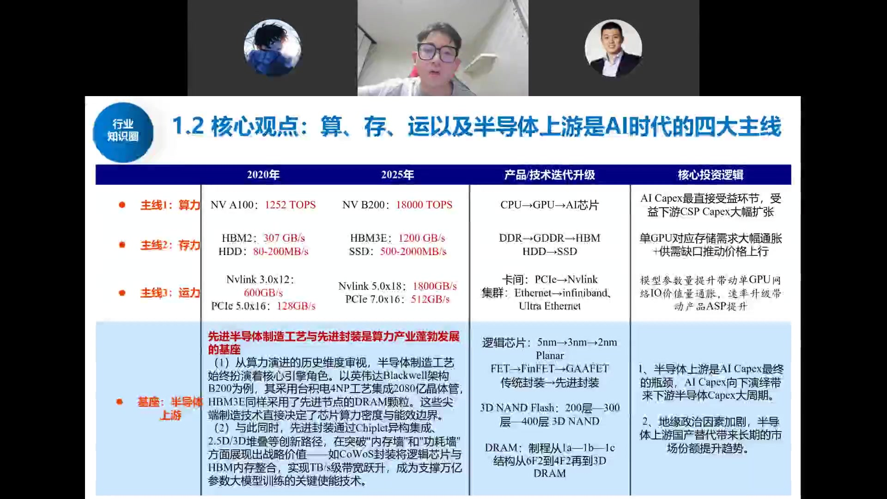
AI Capex 的底层推动是 Tokens 需求爆发：全球 Tokens 调用量自去年 7 月到当前膨胀超 10 倍，截至今年 6 月 29 日全球 Tokens 调用量已超 29.2 万亿。驱动力依次为 GPT 推动 → Gemini 推动 → Anthropic 推动；往后看，推理模型（过程奖励、纠错回退、树搜索产生大量隐式 Tokens 消耗）、长上下文平台（单 Token 硬件资源消耗指数级提升）、多模态模型、Agent AI 将持续推动 Tokens 调用量上升。
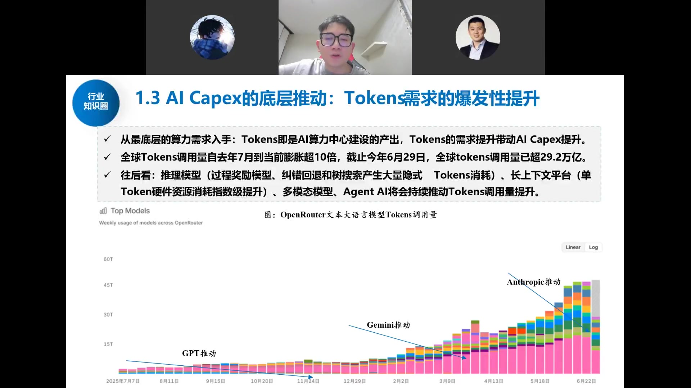
周期节奏：2020–2023 年炒算力（英伟达涨超百倍）→ 2025 年起炒存力（美光、海力士、三星、闪迪/西部数据的存储涨价周期）→ 当下炒运力（博通、Marvell）与设备材料。判断 AI 是否见顶，就看下游大模型公司的 token 调用量与 ARR 是否持续上修——目前该"逻辑闭环"尚未打破。
需求端，海外 Anthropic 等大模型公司的 token 数据、ARR 周/月度仍在不断上升；国内互联网 CSP 大厂 CAPEX 也持续回暖上修。终端 ToC 应用尚未爆发、普通人还没用上多少 AI，但 ToB 端已经支撑大模型企业持续加大算力投入——产业正循环才刚刚开始。
二、算力芯片：万亿级蓝海，国产厂商成长空间广阔
基于国内算力规模（FP16 精度）测算单卡算力消耗、芯片数量与价格，再推导对应的晶圆需求：
- 到 2029 年，中国大陆算力规模有望超过 5457.4 EFlops，2024–2029 年复合增长率约 49.7%。
- 国内 AI 芯片市场规模：2026 年望超 5000 亿元，2029 年突破 1.6 万亿元。
- 对应晶圆代工市场需求：从 2024 年约 14 亿美金增至 2029 年约 68 亿美金，且这个值大概率被不断上修（纯增量）。

政策端：据日经新闻网，中国正推动国产 AI 芯片自给率，预计 2027 年 AI 数据中心中国产芯片使用比例达 70%。2026 年 5 月 26 日，中国信息安全测评中心、国家保密科技测评中心联合发布《安全可靠测评结果公告（2026 年第 2 号）》，9 款国产 AI 训练推理芯片全部通过安全可靠 I 级认证，覆盖华为海思（昇腾 310/910）、平头哥（真武 M530/M890）、壁仞科技（壁砺 TM166）、海光信息（DCU-3G）、天数智芯（KCC-V100X）、沐曦（MXC600）、摩尔线程（PH100）七大厂商。
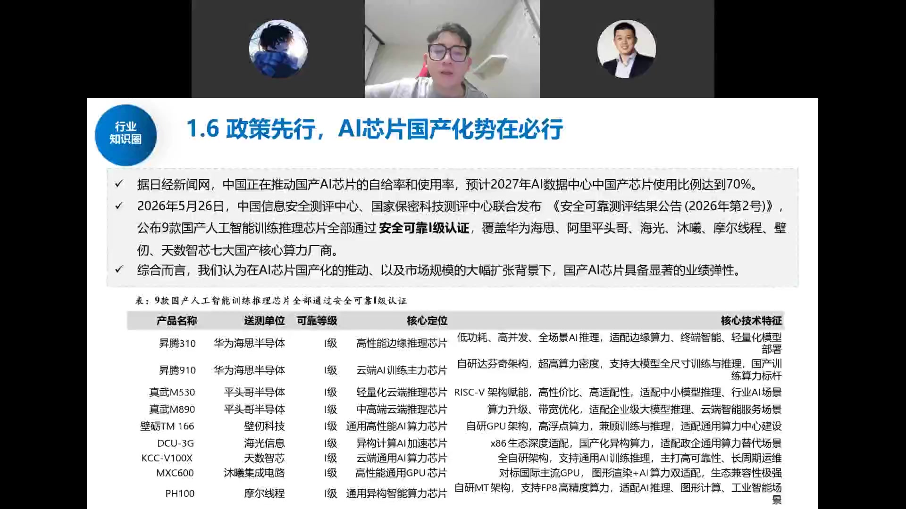
以华为昇腾 950 为例：PR 版采用昇腾 950 核心 + HiBL 1.0 内存，面向推理 Prefill 阶段，相比 HBM3e/4e 大幅降低成本；DT 版面向推理 Decode 和训练，华为自研 HiZQ 2.0 使内存容量达 144GB、访问带宽 4TB/s、互联带宽 2TB/s。昇腾 950 是多 die 合封芯片，整芯片合封 2 个 AI Die、2 个 IO Die 和 8 个（PR）或 4 个（DT）高速片上内存模块，通过 D2D Clink 和 Memory Interface 连成内存统一访问（UMA）整体；可基于 UB 互连同组 K 级超节点，搭配 UB Switch 实现 Full Mesh/Clos 等拓扑。
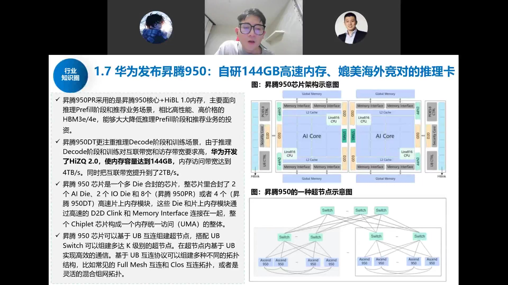
以华为昇腾 950 为例，其采用多 die 合封、走"超节点"路线（牺牲单卡性能、增大卡间互联），8 卡乃至 Atlas 8000 千卡集群超节点已开始放量，互联类交换芯片（运力）是持续主线。
三、存储的演绎逻辑：从周期品到定制化成长股
存储是本次行情的焦点。DRAM、NAND 一季度环比涨幅一度达 90%/100%，B2C 产品价格已达去年同期约 5 倍，B2B 合约价上涨 3–4 倍。但研究员判断：如此高的涨价斜率难再持续，存储却不会就此走弱，核心是三个变化：

全球 AI 存储需求测算：受益单卡 DRAM/NAND 需求量膨胀及 HDD 紧缺带动冷数据向 SSD 转移，预计全球存储芯片市场规模/晶圆需求未来两年大幅扩张。单卡出货量 2025 年 1300 万片 → 2027 年 2800 万片；单卡 HBM 192GB→432GB；HBM 总需求 24.96 亿 GB（2025）→ 120.96 亿 GB（2027）；DRAM 总需求 33.28→71.68 亿 GB。HBM 市场规模 374 亿美金（2025）→ 3024 亿美金（2027）；NAND 市场 87 亿→2329 亿美金；SSD 市场 109 亿→2588 亿美金。Wafer 片数：HBM 260→1260 KWPM，DRAM 116→249，NAND 87→498。
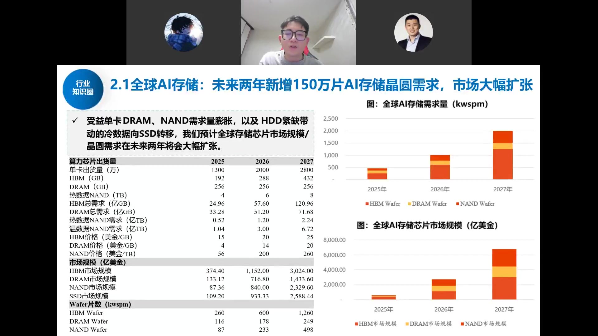
全球 Fab 扩产动作频繁：美光宣布 2026 财年资本支出超 270 亿美金、2027 年预告超 400 亿美金；SK 海力士加速韩国龙仁集群建设，首座工厂总投资 31 万亿韩元，二至六阶段 5 个洁净室同步铺开，首座提前至 2027 年 2 月投产，另在 3 月宣布 80 亿美金购入；台积电 2025Q4 业绩超预期，资本开支指引上调至 560 亿美金。上述公司 2026 年资本开支已达 2060 亿美金，若其他厂商占 10%，全球 2026 年 Capex 望达 2289 亿美金，对应 WFE 市场约 1600 亿美金——超出年初泛林/KLA 预测的 1350 亿、Semi 预测的 1330 亿、外资卖方均值 1250 亿约 13%。
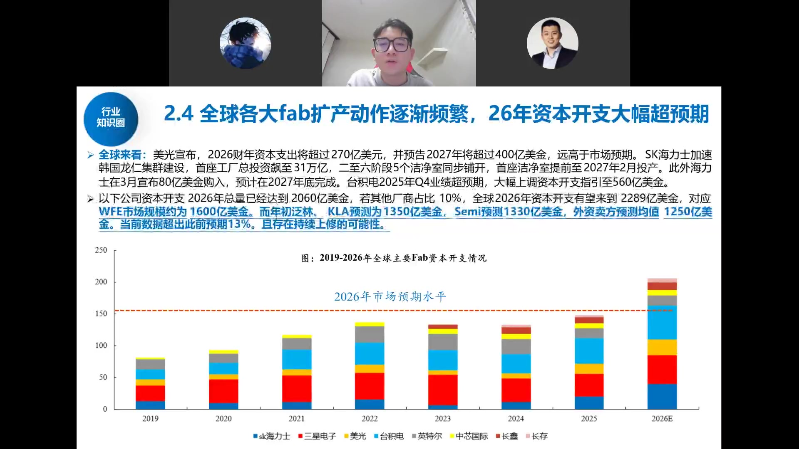
DRAM 行业基本面：DRAM 是数据读写与传输的核心硬件载体，全球半导体市场占比最高且增速最高的单一品类之一。结构简单（电容器+晶体管），具有高存储容量和成本效率优势。下游应用中服务器占比从 2024 年 38% 快速提升至 2029E 的 51%，移动设备 35%→29%，是需求增长的核心拉动。
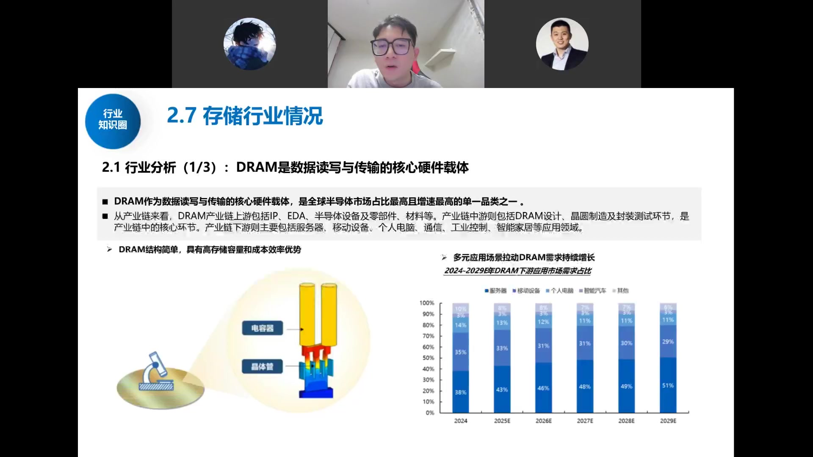
1. 价格：LTA 长协锁单，斜率放缓
随着下游客户接受高价意愿下降，原厂纷纷通过 LTA（长协） 锁定 5–10 年长单：不再赌短期暴涨，而是用"量"的持续放量 + 价格温和上涨换取更长的产业能见度。
2. 产品结构：从标品走向 HBM 定制化
本轮真正的核心产品是 HBM 和 SOCAMM（安装在英伟达 Vera CPU 旁的定制内存模组）。HBM 是高度定制化、与 GPU 协同开发的产品，不像 DRAM/NAND 那样可被友商扩产"卷价"。当前 HBM 已占存储出货量价值量的 45%–50%，未来有望到 6–7 成。存储正从"标品周期股"变为"定制化成长股"。
3. 估值锚：从"赚多少"转向"赚多久"
过去市场盯单季 ASP 能涨多少、利润峰值冲多高（周期股只给 5–10 倍 PE）；LTA 占比扩大后，问题变成"这份高盈利能维持多久"——对标英伟达 20 多倍、台积电 25 倍以上 PE。估值锚切换过程必然伴随筹码交换与股价剧烈波动。
存储的瓶颈不在"不想扩产"而在"不够扩"：前道设备机台短缺，HBM 消耗晶圆数量是普通 DRAM 的 2–3 倍（HBM4 还可能再翻倍），供需剪刀差长期存在。
四、长鑫：A 股新市值王，对标美光
长鑫主营 DRAM，已停产 DDR4、主攻 DDR5，HBM3 已送测客户、明年推 HBM3E（量产仍有约一年差距），产品处于全球第一梯队。招股书披露的季度盈利逐季爆发：

长鑫科技产品覆盖 DDR、LPDDR 两大主流系列，各系列均提供市场主流第四代、第五代产品，包括 DDR4、DDR5、LPDDR4X、LPDDR5/5X。DDR4 提供 8Gb/16Gb 容量、速率达 3200Mbps，2024 年底以来自有 DDR4 已停止生产；DDR5 凭借更高带宽和更低功耗正在快速取代 DDR4。LPDDR4X 已进入小米、OPPO、vivo、传音、联想等主流厂商供应链并走向海外；LPDDR5/5X 加入 RAS 功能和 On-die ECC 纠错，已进入小米、传音等品牌供应链。
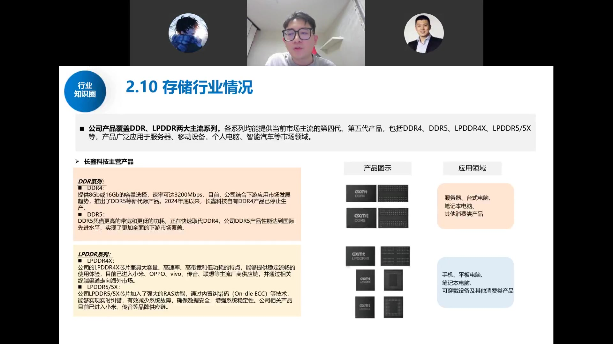
- 营收（亿元）：25Q1 约 62 → 25Q4 约 297 → 26Q1 约 508 → 26Q2(E) 约 642。
- 归母净利（亿元）：从 25 年上半年亏损，到 25Q4 约 72、26Q1 约 248、26Q2(E) 约 287。
- 对应全年：今年利润有望 1500 亿以上，明年看 3000 亿以上；公司规划 5 年扩 3 倍产能。
研究员判断：长鑫极可能成为 A 股市值第一、断档领先的几万亿公司。逻辑是——国内存储与海外差距不大，可直接对标美光（约 7 万亿市值）看齐；而国内晶圆厂与台积电差十几倍。长鑫上市等于告诉市场"高端硬科技我们能追上海外"，从而把晶圆厂、封测、设备环节的远期市值天花板一并打开。
关于长存：做 NAND（不比海外差）也做 DRAM，先进制程在成都（原紫光破产重组厂）也能做；半年后上市，上半年利润可能比长鑫还高、全年近 2000 亿，市值或超长鑫。
发行细节：发行价仅 8.6 元、股本极大（688 板块少见的 10 元以下），目的是让更多普通投资者能中签、分享收益，故中签率很高。
五、设备材料：确定性最高的环节
长鑫、长存猛扩产，海外台积电/美光也在猛扩（美光明年洁净室相关资本开支就达约 200 亿美金），设备是确定性最高的环节。中国半导体设备市场规模 2027 年有望达 7000 亿元，占全球约 39%，未来保持 20%+ 增速。
先进制程瓶颈有二：① EUV 光刻机采购限制——ASML 自 2018 年起被限制出售 EUV 给中国，EUV 是生产 5nm 及以下先进制程的必要设备，High-NA EUV 则是 3nm 以下节点设备；② 工艺限制——台积电与苹果、英伟达等全球龙头深度绑定，拥有最先进制程节点与工艺并保持高额研发投入，国内代工厂在高端芯片代工经验和资源有限。
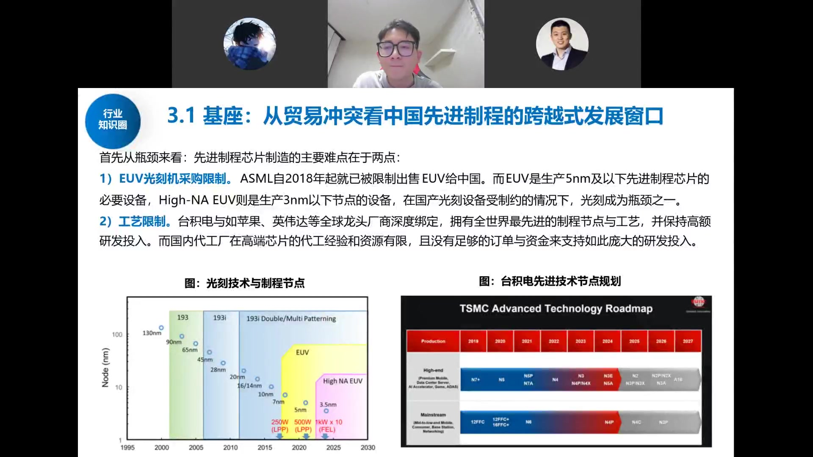
破局路径是先进封装：将多个半导体芯片整合到单个电子封装中，提高性能、降低功耗和成本；在 AI 芯片中通过 SoC、HBM 等部件高速互联实现更高性能。国内长电科技、通富微电、华天科技、甬矽电子、盛合晶微等均有深入布局，部分龙头技术水平已与海外接近。先进封装另辟蹊径，破除"把芯片做的更小"的路径依赖，转而"将芯片封的更小"。
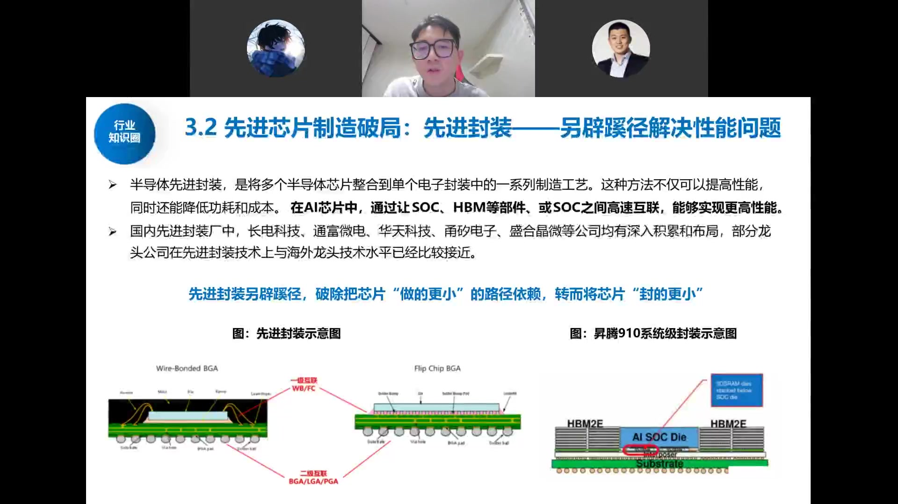
逻辑折叠极大带动先进逻辑代工远期市场：原本预测 2029 年先进逻辑晶圆市场规模 282 亿美金、需求 15 万片，目前预期 2029 年需求至少 30 万片，加上 DRAM CMOS die 后可达 58 万片。中后道键合工艺带动更大价值量与设备投资，参考台积电中后道与前道市场 1:1 对应，先进封装投资规模不亚于成熟制程前道芯片代工。
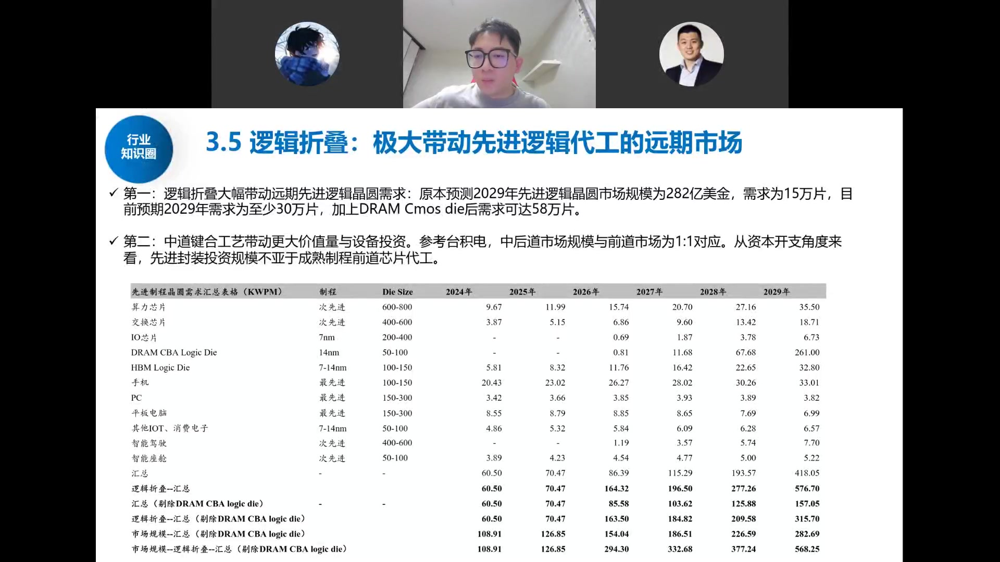
成熟节点产能利用率企稳回升：代工行业景气度回升且仍处较高位置。分下游看，工业市场全面强劲复苏，通信市场 2025 年台积电/联电通信业务均现回升曲线，消费电子（手机/PC）库存去化基本完成，汽车市场复苏滞后仍处低位。模拟 IC 和数字 IC 公司存货周转天数已降至 2022 年缺货前的健康水位，库存不会成为下游拉货阻碍。华虹、中芯国际、联电稼动率均回升至 80–110% 区间。
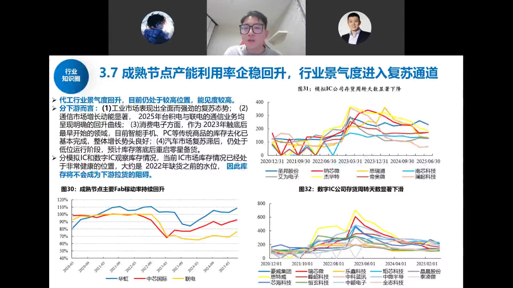
2024 年国产半导体设备厂商收入 768 亿元，同期中国半导体设备市场约 3616 亿元，国产化率约 21%。CMP 和清洗设备是当前优势品类（国产化率 40%/39%），干法刻蚀、薄膜沉积、热处理是第二轮攻坚重点（26%/21%/29%），光刻、过程控制（量检测）、离子注入、涂胶显影尚不足 10%。往后看干法刻蚀、薄膜沉积及 CMP 将是未来 4 年国产化率迅速提升的领域，北方华创与中微是刻蚀替代中坚，拓荆科技已完成 PECVD/ALD/SACVD/HDPCVD 薄膜工艺覆盖并拓展 Flowable CVD。
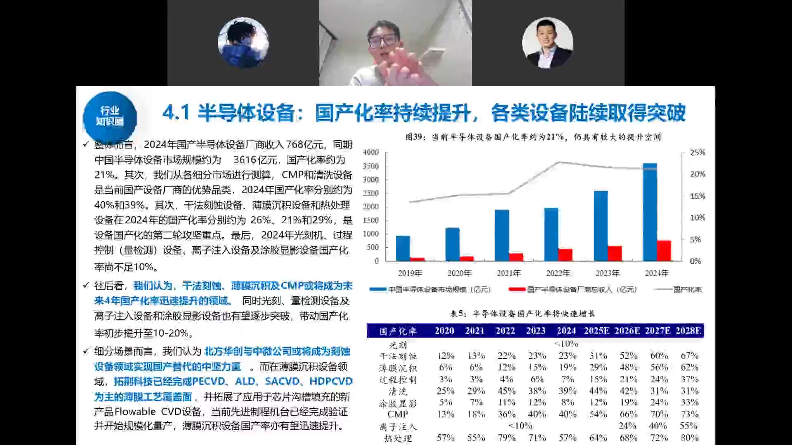

- 前道（晶圆制造）：光刻、刻蚀、薄膜沉积、过程控制等，海外正在猛炒。国产看北方华创、中微公司、拓荆科技。
- 后道（切片/封装/测试）：国内良率不高、更考验封装与测试能力，测试机、探针台、先进封装设备是国内爆炒重点，看精测电子、华峰测控、长川科技。
- 国产化率方向：刻蚀与薄膜沉积是确定性最强的环节；过程控制、涂胶显影、离子注入与后道测试是弹性最大的环节。
叠加华为"逻辑折叠"（韬定律）：单芯片做不到先进制程，就用多 die 3D 堆叠（芯粒/超节点）凑密度，单位晶体管密度仍可达 3nm/1.4nm 水平，但晶圆消耗数量翻倍——这是打开晶圆厂远期空间、拉动先进封装与后道设备的新变量。
六、本轮调整的本质与后市观点
存储板块近期暴涨暴跌、海外韩股率先崩跌，研究员认为主因是筹码与杠杆，而非产业逻辑破坏：
- 过去杠杆打得过高，一个边际变化就触发被动平仓（5 倍杠杆跌 20% 即爆仓），形成多杀多。
- 海力士拟在美股上市，持有韩股的美股基石投资者抛售打压、留出上车空间；叠加存储涨价逻辑切换为长协平滑，韩股超跌。
- 长鑫上市有"抽血效应"：假设 3 万亿市值、10% 流通盘，单日成交可达数百亿甚至更多，市场提前降仓、去杠杆承接。
关键判断：只要大模型 ARR/token 仍在正循环，产业趋势就未破。当前光模块明年约 10 倍 PE、长鑫按利润算估值很快能消化，并非"越跌越贵"的泡沫式熊市起点。若美股只是震荡调整（而非腰斩），国内可切换到"国产化"新叙事；只有美股产业需求证伪（腰斩级下跌），短期逻辑才会真正受冲击。
主持人补充视角：这是美元潮汐收割逻辑（日韩在被收割名单前三），2026 下半年—2027 年前后 A 股需"换故事"讲国产化；对个人而言，财富转型的核心是"跟上核心资产"，成长股 3%–50% 波动是常态，风险提示的本意是"别折腾、别犯大错"，而非逃顶抄底。